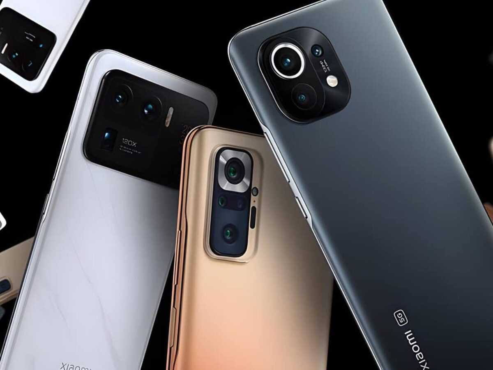
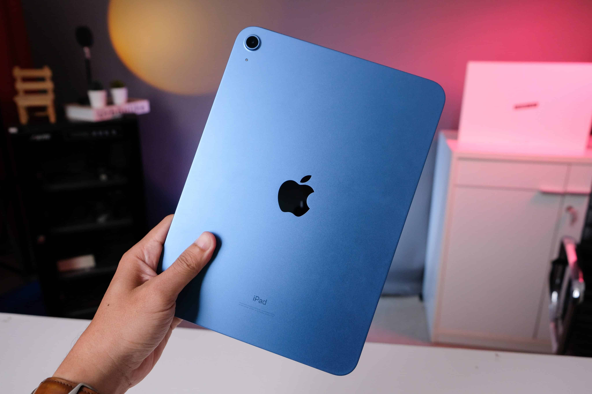
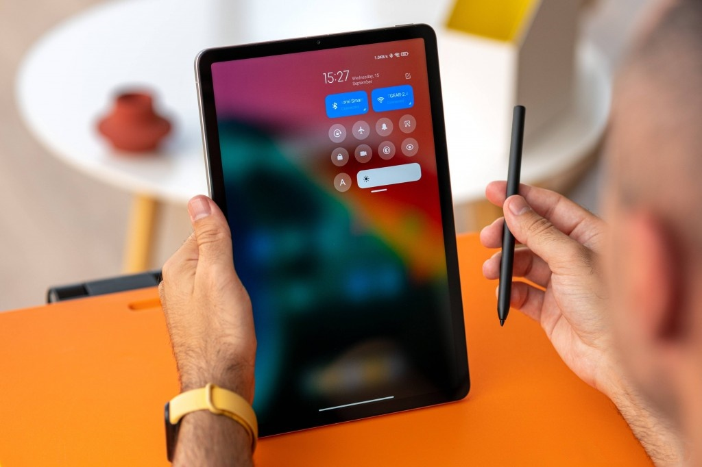
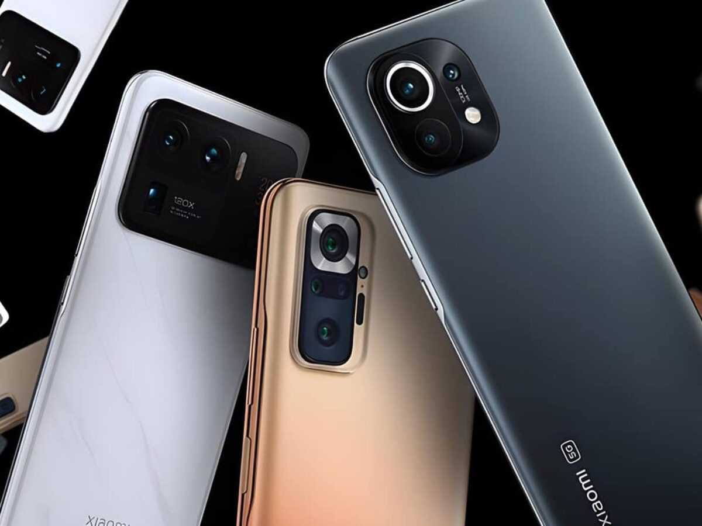
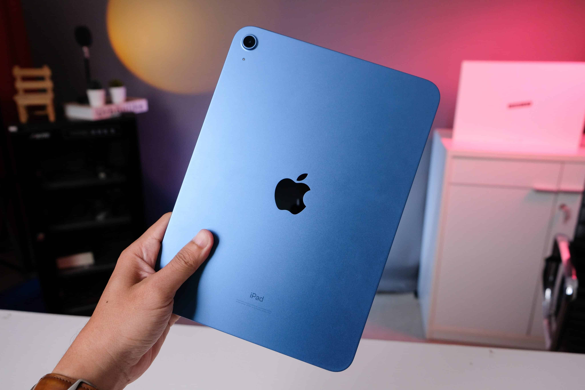
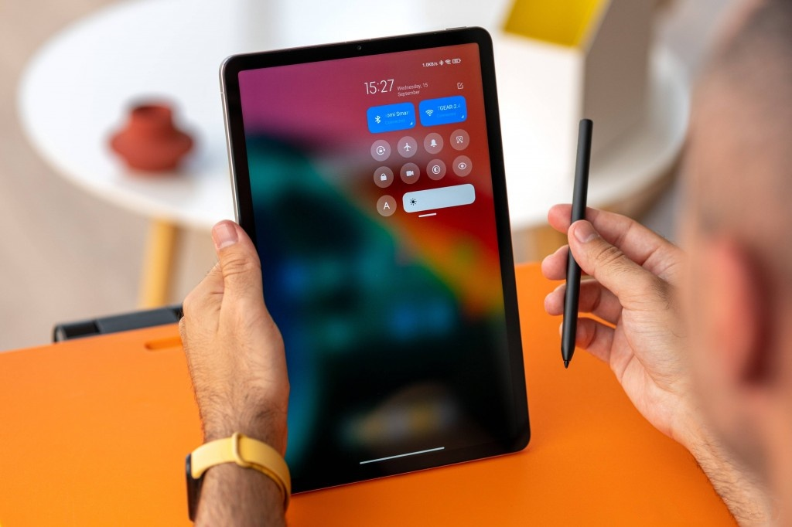

Os telefones celulares são dispositivos de comunicação eficientes que tornam a vida das pessoas mais fácil. A função básica dos telefones celulares é permitir que você fale com outra pessoa, fazer e receber chamadas e mensagens simplesmente pressionando o nome de uma pessoa em sua lista de contatos, eliminando a necessidade de memorização ou de uma agenda separada. A capacidade dos telefones celulares se conectarem à pessoas em outros países ajuda familiares e amigos que estão longe uns dos outros a se aproximarem mesmo com a distância física.
Além da função de comunicação, os celulares contam com recursos de entretenimento, tais como: reprodutor de música, de gravação de áudio, reprodução de vídeo, permitindo que você assista a clipes ou filmes de onde estiver.
Novos modelos de telefones celulares são constantemente projetados para atender às necessidades dos consumidores e agora contam com ferramentas multifuncionais que podem ser úteis no dia a dia. Eles permitem que você armazene dados, imagens, texto e áudio. Isso garante que você esteja sempre com documentos importantes para o trabalho ou sua vida pessoal armazenados no seu aparelho.
aparelhos podem ser fundamentais durante emergências. Quando alguém se envolve em um acidente de carro, por exemplo, ou está com problemas, pode usar seus telefones celulares para ligar para o 911, de forma rápida. A função de câmera do telefone celular também pode ser usada para tirar fotos, e deter, desta forma, um agressor ou perseguidor.
 




